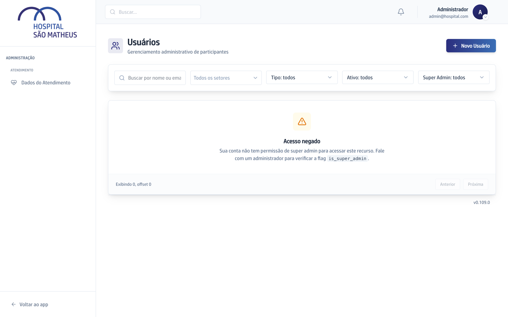
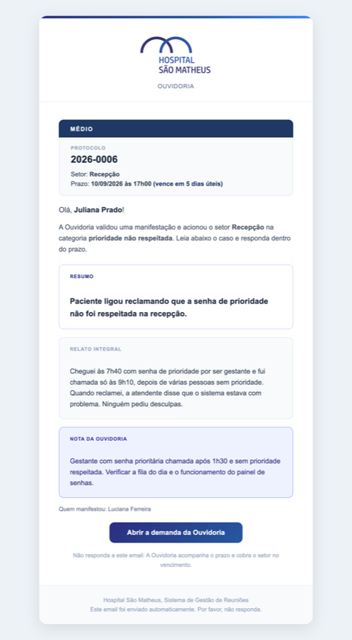
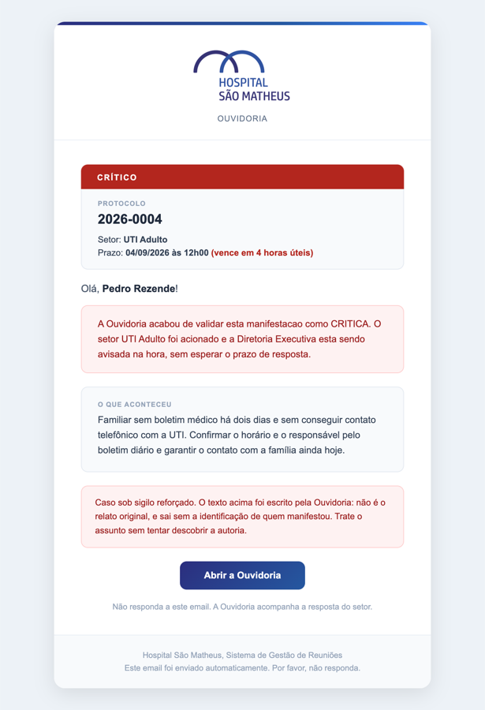

A Ouvidoria por inteiro: o que existe, como funciona e quem faz o quê
Este manual explica o módulo de Ouvidoria de ponta a ponta, com as telas reais do sistema. Cada funcionalidade diz de qual PRD veio e em que estado está. Os capítulos seguem a vida de um caso: entra, é validado, chega ao setor, é cobrado, volta ao manifestante. No fim, a parte técnica das integrações e o mapa de tudo que foi pedido.
O módulo em uma frase
Toda manifestação de paciente, acompanhante ou colaborador vira um caso com número, dono e prazo. Ela entra por qualquer canal, ganha protocolo na hora, é validada pelo ouvidor e despachada ao setor. Quem não responde é cobrado pelo próprio sistema, numa escada que sobe até a Diretoria. O manifestante recebe um acuse na entrada e um aviso no encerramento.
Entrada: por onde o caso chega
São quatro portas, e todas terminam no mesmo lugar: um registro único, com protocolo ANO-NNNN gerado pelo banco, em estado em classificação. Nenhuma porta decide área, tipo, gravidade ou sigilo. Isso é sempre do ouvidor.
Formulário público
Página sem login em /manifestacao. O manifestante escreve o relato, se identifica ou não, sugere a natureza e recebe o protocolo na tela.
QR do cartaz (Ponto de escuta)
O mesmo formulário, aberto pela câmera do celular a partir de um cartaz no setor. O cartaz carrega só um código de 6 letras. O setor vira origem do caso, nunca área responsável.
Ana (WhatsApp)
A assistente de atendimento registra o relato pela API de serviço, com nome, contato, vínculo e uma sugestão de gravidade guardada à parte. Ela registra, não classifica.
Registro manual do ouvidor
Telefone, balcão e e-mail continuam existindo. O ouvidor digita o caso com a data e hora reais do contato (T0) e anexa evidências de até 20 MB.
Formulário público
Foi feito para o celular. O texto é o único campo obrigatório. Identificação é opcional e existe a caixa "quero ficar anônimo". O seletor de natureza tem quatro opções, com elogio primeiro e sem obrigação de escolher. O que o manifestante marca vai para o campo natureza_informada e aparece no dossiê como "O manifestante informou: Elogio". É sugestão, não classificação.


Proteções do canal aberto: limite de 5 envios por minuto por manifestante (primeiro salto do X-Forwarded-For, porque o Next faz proxy da chamada), honeypot, relato de até 10.000 caracteres, e nenhum campo que mude estado, tipo ou sigilo. Caso do canal aberto entra sem tipo, logo sigiloso, até o ouvidor classificar.
QR e Pontos de escuta
Cada lugar do hospital que tem um cartaz é um Ponto de escuta: setor, rótulo do ponto ("Sala de espera", "Balcão principal"), código de 6 caracteres e ativo. Existe um QR por ponto, todos com o mesmo formato de URL. A única diferença entre os cartazes é o código.
| Pergunta | Resposta |
|---|---|
| Que URL vai no cartaz? | https://<app>/ouvidoria/qr?p=CODIGO. Só isso. Nunca a URL final do formulário, nunca setor e ponto por extenso. |
| Quem decide o destino? | O servidor. Hoje ele redireciona para /manifestacao?p=CODIGO. Amanhã pode mandar para a conversa da Ana no WhatsApp oficial. O cartaz nunca precisa ser reimpresso. |
| Como é o código? | 6 caracteres sorteados do alfabeto 23456789ABCDEFGHJKLMNPQRSTUVWXYZ (sem 0/O e 1/I para não confundir quem digita à mão). |
| E se o cartaz for de ponto desativado? | Abre o formulário normal, sem origem. Quem está na frente de um cartaz nunca fica sem canal. Ponto desativa, nunca apaga. |
| Existem tipos diferentes de QR? | Não. Um único tipo, um por ponto. Diferentes "configurações" de QR não existem: o que muda é o cadastro do ponto por trás do código. |
| Quem cadastra e imprime? | O Perfil da Ouvidoria (ouvidor ou diretoria executiva), na tela /ouvidoria/pontos. Cartaz é operação do canal, não governança. |


O passo a passo de emitir um cartaz está no capítulo 8 (Emitir um QR). Resumo: cadastrar o ponto, baixar o PDF, imprimir em A5, colar. Nada mais.
O caso que entra por um cartaz grava canal = qr, canal_setor e canal_ponto. O dossiê mostra "Chegou pelo QR de um cartaz (Pronto Atendimento, Sala de espera)" com o aviso de que ler o QR não prova presença no local: o endereço pode ser aberto de qualquer lugar.
em desenvolvimento Issue #475: cadastrar os 4 pontos do diagnóstico da Diretoria e entregar os PNGs para a arte.
Canal da Ana
A Ana é a agente de atendimento pelo WhatsApp, um produto irmão com repositório próprio. Ela não loga, não tem conta, não é usuária. Ela consome a API de serviço do app com uma chave própria e registra a manifestação com os campos do dossiê. O caso entra sem tipo (sigiloso até classificar) e dispara o acuse de recebimento ao manifestante. O que a Ana sugere de gravidade fica em classificacao_ia e nunca vira a classificação. Se ela tentar mandar status, desfecho, tipo ou sigilo, a API recusa. Detalhes e exemplos de chamada em API da Ana.
Registro manual do ouvidor
O botão "Nova manifestação" da fila abre o formulário do ouvidor: canal (telefone, presencial, e-mail), data e hora reais do contato, tipo, categoria, setor, resumo, relato integral, identificação, vínculo, anônimo e sigilo reforçado. O que o manifestante disse entra íntegro, sem edição. Anexos (imagem, PDF, áudio, documento, até 20 MB) ficam em bucket privado e só abrem por URL assinada emitida depois de conferir o perfil.

Validação, classificação e sigilo
O coração do módulo. A validação e acionamento é o ato único em que o ouvidor confere tipo, área e gravidade e a área é acionada no mesmo passo. É a única porta do despacho. Nenhum processo automático acorda um setor.
A fila
A tela /ouvidoria agrupa os casos por situação, na ordem do trabalho: Aguardando seu encerramento no topo (respondidos pela área), depois Em classificação, Aguardando área, Aguardando manifestante, Respondida e Encerrada. Cada linha tem dois níveis (protocolo, gravidade e resumo em cima; setor, responsável e vencimento embaixo) e a ação sempre visível: validar, cobrar ou encerrar.

Três escalas, três lugares
Estado só na faixa do bloco, gravidade só na pílula, prazo só na cor do vencimento. Nunca se misturam (RN-70 e RN-71).
Visto global
Um carimbo por caso, não por pessoa. Abrir o dossiê, validar ou encerrar apaga o ponto. Pausa, devolução e resposta da área não apagam.
Semáforo de prazo
Vermelho só para vencido e vence hoje. Âmbar até um dia útil de folga. Neutro acima disso. Régua própria, não a paleta de gravidade.

Atalhos da fila: Painel, Nota externa, Pontos e o contador "N em andamento". A diretoria executiva vê também Prazos e Responsáveis.
Cobrar: reenvia a cobrança ao responsável vigente do setor, não ao destinatário original do e-mail (issue #536). Se o titular mudou, a cobrança vai para quem responde hoje.
Encerrar pela lista: abre o mesmo formulário de encerramento do dossiê. Desfecho e descrição são obrigatórios: nada fecha vazio.
Validar e acionar
O botão "Validar e acionar" abre o formulário abaixo. Ao confirmar, o caso vai de em classificação para aguardando área, grava o marco T1, o motor de prazos calcula e congela o vencimento, e o titular do setor recebe o e-mail de acionamento. O extrato para o setor é obrigatório sem exceção: a validação é recusada sem ele.

Lista fechada: denúncia, reclamação, sugestão, elogio, relato de conduta, informação. É o tipo, e só ele, que decide o sigilo por natureza.
Vem da taxonomia de Setores da casa. Setor sem titular vigente sobe ao gestor, com alerta à Diretoria. Sem titular e sem gestor, a validação é recusada.
Crítico, alto, médio ou baixo. Define o prazo pela tabela da Diretoria. Crítico avisa a Diretoria na hora, fora do expediente inclusive.
O texto do ouvidor, com as palavras dele. Vai como "Nota da Ouvidoria" no e-mail e na tela do responsável, ao lado do resumo e do relato integral (ADR 0041).
Tipo e sigilo
Denúncia e relato de conduta nascem com sigilo reforçado em qualquer canal, sem ato humano. Caso sem tipo (canal aberto e Ana, antes de classificar) é sigiloso por segurança. A regra automática é piso, nunca teto: o ouvidor pode elevar o sigilo de um caso que a lista não previu, e não pode retirar o de um tipo sigiloso por natureza.
| Situação | Quem vê o dossiê | O que o setor recebe |
|---|---|---|
| Caso comum | Ouvidor e diretoria executiva veem tudo. Demais perfis de Reuniões veem o índice (número, setor, situação, prazo). | Resumo, relato integral, nota da Ouvidoria e quem manifestou. |
| Sigilo reforçado | Só ouvidor e diretoria executiva. O caso nem aparece no índice de quem está fora da Ouvidoria. | Só a nota da Ouvidoria. Sem resumo, sem relato, "Sem identificação". |
| Caso anônimo | Como o comum, sem dados de quem manifestou. | Mesma proteção do sigiloso: só a nota. O anonimato se desfaria dentro do próprio texto (ratificado em 03/09/2026, ADR 0041). |
| Super admin técnico | Fica fora do dossiê por regra (RN-40). Administrar o sistema não é ler denúncia. | |
A única porta do sigilo é a classificação. Ela existe em dois lugares com a mesma regra: dentro da validação (para o caso que vai ser despachado) e no bloco "Classificação e sigilo" do dossiê (para o que já foi ou nunca vai ser). Sem pedido explícito, o sigilo de hoje é mantido: descer é ato consciente, com movimento na trilha e registro no log de acesso. Um caso do canal aberto validado como reclamação continua sigiloso até o ouvidor desmarcar a caixa.

Página do caso
Cada caso tem URL própria por protocolo: /ouvidoria/m/2026-0001. Os e-mails para quem tem login levam direto a ela. Se a pessoa não estiver logada, o login devolve ao destino original. A página responde "onde este caso emperrou" com os quatro marcos e o tempo de expediente entre cada par, e conta a história inteira na linha do tempo, alimentada pela trilha imutável de movimentos.

Os quatro marcos
T0 entrada (hora real do contato) · T1 validação · T2 resposta da área · T3 conclusão. Mais o acuse e o aviso ao manifestante, e os dois prazos: da área e conclusivo.
Trilha imutável
Todo movimento grava estado anterior, novo, quem e quando, na mesma transação. Nem app, nem API, nem super admin editam ou apagam. O banco recusa por trigger. Erro se conserta com movimento novo.
Notificações enviadas
Todo e-mail nasce antes como registro no caso. É o que prova a cobrança e alimenta o botão "Reenviar". O reenvio é registro próprio, sem reescrever o original.
Encerrar
Só com desfecho (procedente, improcedente, parcialmente procedente, sem condições de apuração, sem retorno do manifestante) e descrição. O encerramento dispara o aviso ao manifestante.

Portal do setor: o responsável responde em um minuto
Quem responde pelo setor não tem login. Ele recebe um e-mail com um botão só, abre o link no celular, lê e responde ali mesmo. O link vale para aquele caso e para aquela pessoa, é guardado só como hash no banco, expira e é consumido pela resposta.

Dez elementos, nesta ordem, e nada entre a gravidade e o prazo. Quem abre esse link é o usuário menos treinado do módulo. A hierarquia da tela substitui o treinamento.
Os três blocos (ADR 0041): Resumo, Relato integral e Nota da Ouvidoria, visualmente distintos, para a área responder ao paciente e não à interpretação da Ouvidoria. No caso sigiloso ou anônimo sai só a nota.
O que o servidor recusa: resposta com menos de 20 caracteres, resposta acima do teto, prorrogação depois do vencimento, segunda prorrogação, justificativa vazia. A mensagem de erro diz o motivo real.
Anexos: opcionais, até 20 MB por arquivo, mesmos tipos do dossiê.
Proteção de dado: a rota do token fica fora do cache do PWA (issue #508) e o token nunca aparece em log (issue #465). Timeout do banco vira mensagem, não tela branca (issue #509).
em desenvolvimento Issue #559: registrar no PRD #469 a exceção do caso anônimo (documentação, sem mudança de código).

O que acontece depois da resposta
- O caso vai para respondido e grava o marco T2. A resposta entra na trilha como dado imutável.
- O ouvidor vê o caso no bloco Aguardando seu encerramento no topo da fila.
- Se a resposta for fraca, o ouvidor devolve por insuficiência com motivo obrigatório. A área recebe e-mail com link novo e volta a ter prazo, mas só metade do prazo da gravidade, somado ao tempo já corrido. Responder mal não ganha relógio novo.
- Se estiver boa, o ouvidor encerra com desfecho. O manifestante recebe o aviso.
Prazos e cobrança
O prazo vem da gravidade, numa tabela que a Diretoria edita em tela. Ele corre em calendário útil e fica congelado no caso desde o acionamento. A cobrança não depende de ninguém abrir tela: um job varre a fila a cada 10 minutos e sobe uma escada que termina na Diretoria.
Tabela de prazos
Chave: gravidade e marco. Em branco significa "sem prazo para essa combinação" (crítico não tem conclusiva fixa; baixo não passa pela área). Zero significa imediato. Só o acusar recebimento corre em horas corridas, porque é promessa ao paciente. Todo o resto corre no calendário útil. Cada edição grava quem mudou, quando e de quanto para quanto.
| Gravidade | Acusar recebimento | Triagem (T0 a T1) | Resposta da área (T1 a T2) | Conclusiva (T0 a T3) |
|---|---|---|---|---|
| Crítico | imediato (mesmo dia) | imediato | 4 horas úteis | sem prazo fixo |
| Alto | 24 h corridas | 4 horas úteis | 2 dias úteis | 5 dias úteis |
| Médio | 24 h corridas | 1 dia útil | 4 dias úteis | 7 dias úteis |
| Baixo | 24 h corridas | 1 dia útil | não passa pela área | 2 dias úteis |
Valores do seed da especificação da Diretoria. O que vale é o que está na tela /ouvidoria/prazos de produção.

Calendário útil
Expediente
Segunda a sexta, 08h às 17h, fuso America/Sao_Paulo. Hora útil anda dentro do expediente e para às 17h.
Feriados
Nacionais, estaduais do RJ e municipais do Rio, em tabela administrável pela diretoria executiva na mesma tela dos prazos.
Dia útil não conta o dia do fato
Caso validado sexta às 16h50 com 2 dias úteis: a contagem abre segunda às 08h e vence terça às 17h.
O motor de prazos é uma função pura: recebe gravidade, tabela e feriados e devolve o vencimento e o rótulo ("vence em 2 dias úteis", "vencido há 3 horas úteis"). Painel, fila, e-mail e relatório mostram o mesmo rótulo porque saem do mesmo motor. Mudar a tabela depois não recalcula caso já despachado.
Escada de cobrança
- Janela comercial: cobrança gerada fora do expediente espera a próxima abertura. Caso crítico sai na hora.
- Retentativa com backoff: falha do provedor devolve a notificação à fila com espera crescente. Na terceira falha o registro vira
falhae o admin técnico é avisado. - Escada honesta (issue #373): a decisão de travar olha os degraus viáveis. Caso sem ninguém a quem escalonar recebe o carimbo "escalonamento impossível", sai da varredura sem queimar degrau, e a Diretoria recebe um alerta de cadastro (gatilho separado de propósito).
- Setor sem titular vigente não é acionável: a demanda sobe ao gestor com alerta à Diretoria. Sem titular e sem gestor, a validação é recusada.
- Parâmetros do job: rodada a cada 10 minutos, 25 casos por rodada, leitura de até 200, horizonte de 15 dias.
Desvios que o sistema já entende
A área precisa de mais tempo
Pede prorrogação pelo próprio link, com justificativa e dias úteis. Vale uma vez só, antes de vencer, e o prazo novo nunca passa de 30 dias úteis da entrada. Quem decide é o ouvidor; quem pediu recebe a decisão por e-mail, mesmo que já tenha respondido.
A resposta é fraca
Devolução por insuficiência com motivo obrigatório. A área volta a ter metade do prazo da gravidade, somado ao tempo já corrido. A devolução carrega o estouro já consumado e não apaga o histórico (issues #369, #370, #374).
Falta dado de quem reclamou
O caso vai para aguardando manifestante e o relógio da área para. Na volta, o vencimento anda para frente o tempo parado. O relatório mostra esse tempo à parte, para o desconto não esconder lentidão real.
O manifestante some
Depois de duas tentativas de contato registradas e cinco dias úteis, o ouvidor encerra por "sem retorno do manifestante". Desfecho neutro: não conta como resolvido nem como não resolvido.
A pessoa volta a reclamar
Reabertura em até 30 dias marca o caso original como reincidência. Não nasce protocolo novo. A reabertura só eleva o sigilo, nunca desce. A área recebe e-mail com link novo.
Memória dos ciclos
Cada devolução e resposta vira um ciclo com histórico. O indicador de cumprimento é honesto: a coluna guarda o vencimento rompido, não a hora da resposta.
Retornos ao manifestante
Dois e-mails têm o manifestante como destinatário. São os únicos que saem do hospital para fora. Ambos existem só quando há um e-mail de contato no caso.


Por que tão pouco conteúdo? Todo e-mail do app sai por um processador externo (Resend, fora do Brasil, ADR 0039). O ADR fecha campo a campo o que pode viajar. Para o manifestante, viaja o protocolo e o desfecho. O relato nunca viaja de volta.
em desenvolvimento Issue #547: quem recebe e-mail do manifestante não pode depender de lista escrita à mão (endurecimento de teste).
Cadastros e perfis: quem faz o quê
O Perfil da Ouvidoria é um eixo de permissão próprio, ortogonal ao perfil de Reuniões e ao perfil de POPs. Só dois valores: ouvidor e diretoria_executiva. O responsável do setor não é usuário: age pelo link.
| Quem | Como entra | O que pode fazer | O que não pode |
|---|---|---|---|
| Ouvidor | Login no app, perfil concedido pelo Super Admin na tela de Usuários. | Abrir o caso completo, inclusive sigiloso. Registrar manual, classificar, validar e acionar, devolver, reabrir, cobrar, decidir prorrogação, registrar tentativas de contato, encerrar. Cadastrar Pontos de escuta e imprimir cartazes. Lançar nota externa. Ver painel, métricas e relatórios. | Editar a tabela de prazos e feriados. Cadastrar responsáveis de setor. |
| Diretoria Executiva | Login no app, mesmo caminho. | Tudo do ouvidor, mais o exclusivo: tabela de prazos, feriados e responsáveis por setor. Recebe os escalonamentos, o crítico imediato, o alerta de cadastro e os relatórios quinzenal e mensal. | Editar ou apagar a trilha. Ninguém pode. |
| Responsável do setor | Sem login. Recebe e-mail com link tokenizado. Papéis: titular, substituto, gestor, com vigência. | Ler o caso (três blocos), responder o que foi feito, anexar, pedir prorrogação uma vez. | Ver a fila, outros casos, o nome de quem manifestou em caso protegido. |
| Secretária e facilitador | Perfil de Reuniões. | Ver só o índice dos casos não sigilosos: número, setor, situação, prazo. | Abrir o dossiê. Ver caso sigiloso. |
| Super admin técnico | Perfil de Reuniões. | Conceder e revogar o perfil de Ouvidoria (fica no audit log). Receber alertas técnicos (falha de envio, job sem destinatário). | Ler o dossiê sigiloso (RN-40). Editar a trilha. |
| Ana | API key de serviço no header. | Registrar manifestação com os campos do dossiê. Consultar o andamento de um protocolo. Ler as tabelas do Dados do Atendimento. | Classificar, mudar estado, desfecho, tipo ou sigilo. |

Responsáveis por setor
Cadastro sobre a taxonomia de Setores da casa, sem lista paralela. Cada responsável tem papel e vigência (o fim é inclusivo: quem sai no dia 31 ainda responde no dia 31). Para tirar alguém do papel o caminho é encerrar a vigência, não apagar.

Painel, relatórios, nota externa e retenção
Um único módulo de métricas alimenta o painel e os PDFs. É isso, e não disciplina de quem escreve as telas, que impede o número do painel de divergir do número do relatório.
Painel em tempo real

Duas perguntas, dois universos
Quase tudo responde "o que entrou no período". Pendências por área responde "o que está pendente agora" e lê a fila viva inteira: a área com o caso mais atrasado não some porque o caso entrou no mês passado.
Degradado, nunca silêncio
O que não conseguiu ser lido vira degradado na resposta. Número fabricado por falha de leitura é o pior modo de falha num painel.
Custo controlado
Leituras minimizadas, paginação contra o teto do PostgREST e rate limit apertado (issues #429, #430, #448).
Relatórios em PDF por e-mail
| Relatório | Quando | O que traz | Para quem |
|---|---|---|---|
| Quinzenal | Dias 1 e 16 | Os números do período: entradas por tipo, área, gravidade e canal; cumprimento de prazo da área; tempo útil por trecho; pendências; o Retrato externo com a nota do Google e do Reclame Aqui congelada. | Diretoria Executiva |
| Mensal | Dia 1 | Tudo do quinzenal, mais a evolução da nota externa e uma seção de sugestões de ação corretiva escrita por IA. A IA recebe só o agregado, nunca o relato. | Diretoria Executiva |
Envio honesto: o registro do relatório guarda destinatários por entrega e o que de fato saiu. Se o job falhar, há fila de recuperação, e o botão de reenvio na API manda o mesmo PDF.
Nota externa

As estrelas do Google (0 a 5) e o índice do Reclame Aqui (0 a 10) não são medidos pelo sistema. Ficam num diário: o relatório de julho, reenviado em setembro, mostra a nota de julho. A tela sempre mostra a escala ao lado (4,3 de 5 é 86%; 7,8 de 10 é 78%) e nunca transforma ausência em zero.
planejado PRD #472: avaliações do Google viram manifestações, com trava de sigilo na resposta pública. Ainda sem fatias (needs-info).
Retenção e pseudonimização (LGPD)
Retenção após 5 anos
Roda sozinha, de madrugada, e apaga o dossiê do caso encerrado há mais de cinco anos, contados do T3. Varre os cinco lugares onde o relato mora: a manifestação, os anexos (metadados e binário), a observação dos movimentos, o texto das tentativas de contato e das prorrogações, e o detalhe das notificações. Preserva o que os relatórios contam. Freio: OUVIDORIA_RETENCAO_ATIVA=false.
Pseudonimização
Função pura que tira identificadores do texto antes de qualquer uso agregado. Endurecida com fuzz diferencial e mutação: nomes completos, identificadores fora do padrão e traços CJK.
Integrações técnicas
Este capítulo é para quem vai integrar ou operar. Endpoints reais, exemplos reais de requisição e resposta, o passo a passo do QR, o catálogo dos 14 e-mails e as variáveis de ambiente por nome. Nenhum valor secreto aparece aqui.
API da Ana
Cinco endpoints sob /api/ana/*. Autenticação por API key de serviço no header X-API-Key, comparada com secrets.compare_digest. Chave não configurada significa API desligada. Sem chave ou chave errada: 401. Rate limit de 60 por minuto nos dois endpoints de ouvidoria. É a única porta máquina a máquina do app, fora do fluxo JWT.
| Método | Caminho | Para quê |
|---|---|---|
| GET | /api/ana/consultas-particulares | Preços e diferenciais por especialidade. Filtro ?especialidade=. |
| GET | /api/ana/exames | Exames com preparo, preço particular e observações. Filtro ?exame=. |
| GET | /api/ana/cirurgias-estimativas | Estimativas de cirurgia. Filtro ?procedimento=. |
| POST | /api/ana/ouvidoria/protocolos | Registra uma manifestação e devolve o protocolo. |
| GET | /api/ana/ouvidoria/protocolos/{protocolo} | Consulta o andamento de um protocolo. |
Registrar uma manifestação
Obrigatórios: categoria, setor, resumo. Vazio, só espaço ou só travessão é recusado (defesa contra a falha silenciosa do cliente da Ana). Os campos do dossiê são opcionais. Campo desconhecido é ignorado, mas campo de decisão do ouvidor é recusado com 422.
POST /api/ana/ouvidoria/protocolos
X-API-Key: <chave de serviço>
Content-Type: application/json
{
"categoria": "demora no atendimento",
"setor": "UTI Adulto",
"resumo": "Familiar relata que não recebe boletim médico da UTI há dois dias.",
"conversa_id": "wa-5521998877665",
"relato_integral": "Minha mãe está internada na UTI desde segunda. Ligo todos os dias...",
"manifestante_nome": "Patrícia Ramos",
"manifestante_contato": "+55 21 99887-7665",
"manifestante_vinculo": "acompanhante",
"gravidade_sugerida": "alto",
"confianca_sugestao": 0.82
}Resposta 201:
{
"id": "b8c305a5-8193-421a-8894-7460d010236e",
"numero": 4,
"protocolo": "2026-0004",
"data_abertura": "2026-09-03",
"prazo_resposta": "2026-09-10",
"status": "em_classificacao",
"categoria": "demora no atendimento",
"setor": "UTI Adulto",
"resumo": "Familiar relata que não recebe boletim médico da UTI há dois dias.",
"conversa_id": "wa-5521998877665"
}Tentativa de mandar decisão do ouvidor, resposta 422:
{"detail": [{"type": "value_error", "loc": ["body"],
"msg": "Value error, campo de decisão do ouvidor não entra pela API da Ana: status", ...}]}manifestante_vinculo:paciente,acompanhante,colaborador,terceiro,outro.gravidade_sugerida:critico,alto,medio,baixo. Comconfianca_sugestao(0 a 1) vira o JSONclassificacao_ia, guardado à parte.setorpassa pela taxonomia da casa. O que não casa viraSETOR_PENDENTEsem derrubar o registro.- Recusados:
status,desfecho,sigilo_reforcado,tipo_manifestacao,anonimo,dados_incompletos,classificacao_ia. - Efeitos: o caso nasce sem tipo (sigiloso) e o acuse de recebimento ao manifestante é agendado se houver e-mail no contato.
Consultar um protocolo
Caso comum devolve o índice. Caso sigiloso (ou ainda sem tipo) devolve só o andamento: protocolo, estado e data. A Ana usa isso para responder "como está minha reclamação" sem vazar conteúdo.
Caso comum (2026-0001)
{
"id": "3d8849e6-...",
"numero": 1,
"protocolo": "2026-0001",
"data_abertura": "2026-09-03",
"prazo_resposta": "2026-09-10",
"status": "respondido",
"categoria": "demora no atendimento",
"setor": "Pronto Atendimento",
"resumo": "Esperei mais de três horas...",
"conversa_id": ""
}Caso sigiloso (2026-0008, denúncia)
{
"protocolo": "2026-0008",
"status": "em_classificacao",
"data_abertura": "2026-09-03"
}Tabelas do Dados do Atendimento
A plataforma da Ana corta toda resposta de tool em 4.000 caracteres, sem aviso. Por isso cada GET escolhe o modo pelo tamanho: completo (todos os campos), resumo (nome e valor) ou indice (só os nomes). Tirar campo é permitido; tirar linha, nunca. O corpo sempre declara o modo e a dica do gesto seguinte (ADR 0032).
GET /api/ana/exames?exame=tomo
X-API-Key: <chave de serviço>
{
"exames": [
{
"nome_exame": "Tomografia Computadorizada (TC)",
"tipo_exame": "Imagem",
"convenio_aceito": true,
"valor_particular_rs": 580.0,
"requer_pedido_medico": true,
"preparo_necessario": true,
"instrucoes_preparo_completas": "Preparo varia conforme região do corpo. Para TC de abdome: jejum de 4h...",
"tempo_resultado": "No ato / 48h",
"local_realizacao": "Hospital São Matheus, Imagem",
"observacoes_ana": "ATENÇÃO: TC com contraste iodado suspenso..."
}
],
"modo": "completo",
"dica": "Resposta completa. Para um exame só, chame de novo com ?exame=NOME."
}Operação: a chave vive no vault da plataforma da Ana e em ANA_API_KEY no Coolify do backend. Rotacionar significa trocar nos dois lugares. Não reusar a chave para outro consumidor: ela é o escopo desses cinco endpoints.
Emitir um QR e um cartaz
Menu Ouvidoria, atalho "Pontos", ou /ouvidoria/pontos. Precisa do perfil de Ouvidoria.
Escolha o setor da taxonomia e dê um rótulo curto ao ponto ("Sala de espera", até 80 caracteres). O sistema sorteia o código de 6 caracteres. POST /api/ouvidoria/pontos.
Botão "Cartaz PDF". GET /api/ouvidoria/pontos/{id}/cartaz.pdf. A5 retrato, margem 14 mm, QR de 62 mm, logo embutida, endereço por extenso. Renderizado por WeasyPrint a partir de ouvidoria_cartaz.html.
Botão "QR PNG", para a arte montar o cartaz dela. GET /api/ouvidoria/pontos/{id}/qr.png. Gerado pela biblioteca segno, escala 8. É o que a issue #475 pede para os 4 pontos do diagnóstico.
O QR aponta para https://<app>/ouvidoria/qr?p=CODIGO. Quem lê cai no formulário com a origem preenchida. Se o ponto for desativado depois, o mesmo cartaz continua abrindo o formulário, sem origem.
Botão "Desativar" na tela, PATCH /api/ouvidoria/pontos/{id} com ativo=false. Nunca apaga: o histórico de casos aponta para o ponto.
| Rota pública | Limite | Comportamento |
|---|---|---|
| GET /ouvidoria/qr?p=CODIGO | 60/min | Resolve o ponto ativo e devolve 302 para /manifestacao?p=CODIGO. Código ausente, desconhecido ou de ponto inativo cai no formulário sem origem. Nunca página de erro. Fica fora do prefixo /api de propósito, com rewrite dedicado no Next. |
| GET /api/ouvidoria/publico/pontos/{codigo} | 30/min | Devolve setor e ponto para a página perguntar a origem em vez de renderizar texto vindo da URL. |
| POST /api/ouvidoria/publico/manifestacoes | 5/min | Registra a manifestação do canal aberto. Campos: relato, nome, contato, anonimo, p, natureza_informada, assunto_alternativo. |
Catálogo de e-mails
Catorze gatilhos. Todo e-mail nasce como registro na tabela de notificações do caso (gatilho, destinatário, quando, estado), e um job idempotente tira da fila: reivindica a linha (estado enviando) antes de chamar o provedor, para nunca mandar a mesma cobrança duas vezes. Transporte: Resend em primeiro, SMTP como reserva, mock quando não há chave (ambiente local).
| Gatilho | Quando dispara | Destinatário | Leva link do portal |
|---|---|---|---|
| nova_demanda | Validação e acionamento; reenvio manual | Titular do setor (ou substituto/gestor pela cadeia) | Sim |
| alerta_sem_titular | Validação em setor sem titular vigente | Diretoria Executiva | Não |
| vespera_vencimento | 1 dia útil antes do vencimento | Titular | Sim |
| prazo_rompido | No vencimento, sem resposta | Titular e substituto | Sim |
| escalonamento_gestor | 24 h úteis após o vencimento | Gestor da área | Sim |
| escalonamento_diretoria | 48 h úteis após o vencimento | Diretoria Executiva | Não |
| alerta_cadastro_setor | Escada sem ninguém a quem escalar | Diretoria Executiva | Não |
| critico_imediato | Validação de caso crítico, na hora | Diretoria Executiva | Não |
| prorrogacao_solicitada | Setor pede prazo pelo portal | Quem tem perfil de Ouvidoria | Não |
| prorrogacao_decidida | Ouvidor aprova ou nega | Responsável que pediu | Sim |
| resposta_devolvida | Devolução por insuficiência | Responsável do setor | Sim (token novo) |
| caso_reaberto | Reabertura por reincidência | Responsável do setor | Sim (token novo) |
| acusar_recebimento | Abertura do caso, em qualquer canal | O manifestante | Não |
| encerramento_manifestante | Encerramento pelo ouvidor | O manifestante | Não |
- Cobranças canceláveis: véspera, prazo rompido, escalonamentos, devolução e reabertura são cancelados se a área responde antes de o e-mail sair da fila. Crítico imediato e decisão de prorrogação nunca são cancelados.
- Fora do catálogo: o aviso ao admin técnico (falha de envio, job sem destinatário) e os relatórios quinzenal e mensal à Diretoria.
- Assuntos: sempre "Ouvidoria {protocolo}: ...". Os e-mails para a Diretoria têm assunto próprio por degrau, para dois avisos com um dia de intervalo não serem confundidos.
- Templates:
backend/app/templates/email_ouvidoria_*.html, com um base comum. O corpo nunca entra no log em produção.


Paleta de gravidade do e-mail estratificado (RN-34): #B3261E crítico, #C77700 alto, #1F3864 médio, #5F5E5A baixo. Caso sigiloso usa o template sem identificação.
Endpoints internos da Ouvidoria (JWT + perfil)
Para referência de quem for ler o código ou o snapshot. Todos sob /api/ouvidoria, protegidos por require_perfil_ouvidoria.
| Grupo | Rotas |
|---|---|
| Casos | GET /protocolos · POST /manifestacoes · GET /manifestacoes/{id} · GET /manifestacoes/por-protocolo/{protocolo} · GET /novidades |
| Atos do ouvidor | POST .../validar · POST .../classificacao · POST .../transicoes · POST .../devolucoes · POST .../reaberturas · POST .../cobrar-setor · POST e GET .../tentativas-contato |
| Leitura do caso | GET .../respostas · GET .../movimentos · GET .../notificacoes · POST .../notificacoes/{id}/reenviar · GET .../prorrogacoes · POST .../prorrogacoes/{id}/decidir · POST e GET .../anexos · GET .../anexos/{id}/url |
| Pontos de escuta | GET, POST /pontos · PATCH /pontos/{id} · GET /pontos/{id}/qr.png · GET /pontos/{id}/cartaz.pdf |
| Governança (diretoria) | GET, POST /responsaveis · PUT, DELETE /responsaveis/{id} · GET /prazos · PUT /prazos/{gravidade}/{marco} · GET /prazos/historico · GET, POST /feriados · DELETE /feriados/{data} |
| Inteligência | GET /metricas · GET /relatorios · POST /relatorios/{id}/reenvio · GET, POST /nota-externa |
| Portal do setor (token) | GET /api/ouvidoria-setor/{token} · POST .../responder (multipart: resposta, arquivos) · POST .../prorrogacao (json: justificativa, dias_uteis) |
| Admin | PATCH /api/admin/usuarios/{participante_id}/perfil-ouvidoria |
Variáveis de ambiente do módulo
Nomes e função. Os valores vivem só no Coolify (produção) e no .env local (git-ignored).
| Variável | Serviço | Função |
|---|---|---|
| ANA_API_KEY | backend | Chave de serviço da Ana. Vazia desliga os cinco endpoints /api/ana/*. |
| RESEND_API_KEY | backend | Transporte primário de e-mail. Vazia cai no SMTP, e sem SMTP no mock (nada sai). |
| RESEND_FROM_EMAIL | backend | Remetente. Padrão noreply@hospitalsaomatheus.cloud. |
| SMTP_HOST, SMTP_PORT, SMTP_USER, SMTP_PASSWORD, SMTP_FROM_EMAIL | backend | Transporte reserva. |
| FRONTEND_URL | backend | Base dos links nos e-mails: portal do setor, página do caso e endereço do cartaz. |
| SUPABASE_STORAGE_BUCKET_ANEXOS_OUVIDORIA | backend | Bucket privado dos anexos. Padrão anexos-ouvidoria. Leitura só por URL assinada. |
| OUVIDORIA_RETENCAO_ATIVA | backend | Freio da retenção de 5 anos. false para o job não apagar nada. |
| OPENROUTER_API_KEY, LLM_MODEL | backend | A IA das sugestões do relatório mensal. Recebe só o agregado. |
| ENVIRONMENT | backend | Em development o corpo do e-mail vai ao log. Em produção, nunca. |
| NEXT_PUBLIC_API_URL | frontend | Base da API que o formulário público e o portal chamam. O Next faz proxy e repassa o IP em X-Forwarded-For. |
Migrations de banco são aplicadas por humano no Studio de produção. As tabelas do módulo começam em ouvidoria_ (protocolos, movimentos, notificacoes, setor_responsaveis, setor_tokens, prorrogacoes, tentativas_contato, anexos, acessos, pontos, prazos, prazos_historico, feriados, relatorios, nota_externa). Toda tabela nasce com RLS ligado e as RPCs de ouvidoria têm REVOKE para a conta anônima (issues #520 e #541).
Mapa dos PRDs
Tudo que foi pedido para o módulo, por PRD, com as fatias e o estado lido do GitHub em 03/09/2026. Clique para abrir. Fatias de acabamento e follow-ups de review aparecem junto do PRD que as gerou.
#287Dados do Atendimento da Ana no app (migração do NocoDB, painel de ouvidoria e API de serviço)entregue 28/08
Valor: a Ana passa a ler as tabelas de preço e preparo do próprio app, com API key, e a ouvidoria nasce como índice de protocolos com numeração contínua. ADRs 0031 e 0032.
#317Ouvidoria, núcleo + entrada (centralizador de manifestações)entregue 25/08
Valor: a Ouvidoria deixa de ser índice e vira o centralizador. Dossiê completo no app, três canais de entrada, validação como única porta do despacho, portal do setor por link, motor de prazos em calendário útil e a primeira cobrança. ADRs 0034, 0036, 0037.
#318Ouvidoria, governança de prazo (prorrogação, devolução, escalonamento)entregue 25/08
Valor: o prazo passa a ter consequência. Pausa, meio prazo, teto, prorrogação, devolução, aguardando manifestante, reincidência, a escada de escalonamento e o crítico imediato.
#319Ouvidoria, inteligência (relatórios, painel e retenção)entregue 28/08
Valor: a Diretoria enxerga. Métricas únicas, painel em tempo real, relatórios quinzenal e mensal em PDF, nota externa, pseudonimização, retenção de 5 anos, e a tela dos Pontos de escuta.
#467Canal aberto honra o cartaz: quatro naturezas como sugestão do manifestanteaberto
Valor: o formulário do cartaz pergunta a natureza (elogio primeiro), como sugestão gravada à parte, e o dossiê mostra o que o manifestante informou. ADR 0040.
#468Fundação da Ouvidoria: caso com URL própria, retorno pós-login, celular e os quatro marcosentregue 01/09
Valor: cada caso tem endereço, o login devolve ao destino, a Ouvidoria entra na barra do celular, o prazo conclusivo fica congelado e a página mostra onde o caso emperrou.
#469Tela do responsável responde em um minuto, com os três blocosaberto
Valor: a área lê resumo, relato integral e nota da Ouvidoria, na ordem da RN-59, e responde do celular. Servidor recusa resposta curta e prorrogação vencida. ADR 0041.
#470Linha do tempo do caso e sinalização de novidade para o ouvidorentregue 02/09
Valor: o ouvidor sabe o que mudou desde a última vez. Visto global, ponto de novidade, contador no menu, bloco "Aguardando seu encerramento" e a linha do tempo alimentada pela trilha.
#471Lista da Ouvidoria em dois níveis e os retornos ao manifestanteentregue 03/09
Valor: a fila em dois níveis com faixas de status e ação sempre visível, semáforo de prazo recalibrado, tipo "informação", identidade nova, e os dois e-mails ao manifestante. ADR 0042. Reprovado na primeira auditoria pela paleta do semáforo; resolvido pela régua própria (#549).
#472Avaliações do Google viram manifestações, com trava de sigilo na resposta pública (Fase 3)planejado
Valor: a avaliação pública deixa de ser só uma nota digitada e vira caso com dono e prazo, com trava para a resposta pública nunca vazar dado do caso. Sem fatias ainda: etiqueta needs-info.
Avulsas de ouvidoria fora de PRD
Follow-ups de review e endurecimentos, todos entregues: #364, #365, #366, #367 (escalonamento e prorrogação), #429 a #439 (métricas, paginação, relatório, painel, cache), #440 e #465 e #466 (segurança e log), #448, #449, #450, #460. Aberta: #541 em desenvolvimento, cinco funções fora da Ouvidoria executáveis pela conta anônima (revogação em curso).
ADRs que sustentam o módulo
| ADR | Decisão |
|---|---|
| 0031 | Dados do Atendimento da Ana migram do NocoDB para o app. Protocolo por sequence, contínuo. |
| 0032 | A resposta da API da Ana cabe no teto do cliente: filtro por termo e três degraus de detalhe. Tira campo, nunca linha. |
| 0034 | A Ouvidoria vira tramitação: dossiê, despacho e cobrança. Portal do setor por link. Trilha imutável. |
| 0036 | O QR vira Ponto de escuta cadastrado. URL com código curto; o servidor decide o destino. |
| 0037 | Tipo da manifestação é lista fechada e decide o sigilo. Tipo nulo é fail-closed. |
| 0039 | Todo e-mail sai por processador externo (Resend). Lista fechada do que pode viajar. |
| 0040 | Entra o tipo "informação". O formulário público ganha o seletor das quatro naturezas como sugestão. |
| 0041 | O acionamento leva resumo, relato integral e nota. Sigiloso e anônimo levam só a nota. |
| 0042 | Retornos ao manifestante: acuse automático e aviso de encerramento. |
Vídeos de percepção de valor
Dois vídeos existem, atuados de ponta a ponta nas telas do app, sem voz. Os demais PRDs ainda não têm vídeo; a lista de sugestões abaixo é o roteiro para gerar com /perceber quando fizer sentido.
Vídeos sugeridos
| PRD | Título sugerido | Roteiro em três linhas |
|---|---|---|
| #319 | A Diretoria enxerga | 1. Painel em tempo real com um crítico aberto e uma área vencida. 2. O PDF quinzenal chegando por e-mail com o Retrato externo. 3. A nota do Google sendo lançada e aparecendo no relatório do mês. |
| #467 + #378 | O cartaz que escuta | 1. Cadastro do Ponto de escuta e o cartaz A5 saindo pronto. 2. Celular lendo o QR, escolhendo "Elogio" e recebendo o protocolo. 3. O dossiê mostrando "Chegou pelo QR" e "O manifestante informou: Elogio". |
| #468 + #470 | Onde o caso emperrou | 1. E-mail para o ouvidor abrindo direto a página do caso após o login. 2. Os quatro marcos com o tempo de expediente entre eles. 3. O ponto de novidade apagando quando o ouvidor abre, e o contador do menu caindo. |
| #469 | Responder em um minuto | 1. E-mail de acionamento no celular do responsável, com os três blocos. 2. A tela na ordem da RN-59, com o prazo na primeira dobra. 3. Resposta curta recusada pelo servidor, resposta boa aceita, caso aparecendo em "Aguardando seu encerramento". |
| #471 | A fila e o retorno ao paciente | 1. A fila em dois níveis com as faixas de status e o semáforo do prazo. 2. Acuse de recebimento chegando no e-mail do manifestante logo após abrir. 3. Encerramento com desfecho e o aviso chegando com o canal para voltar. |